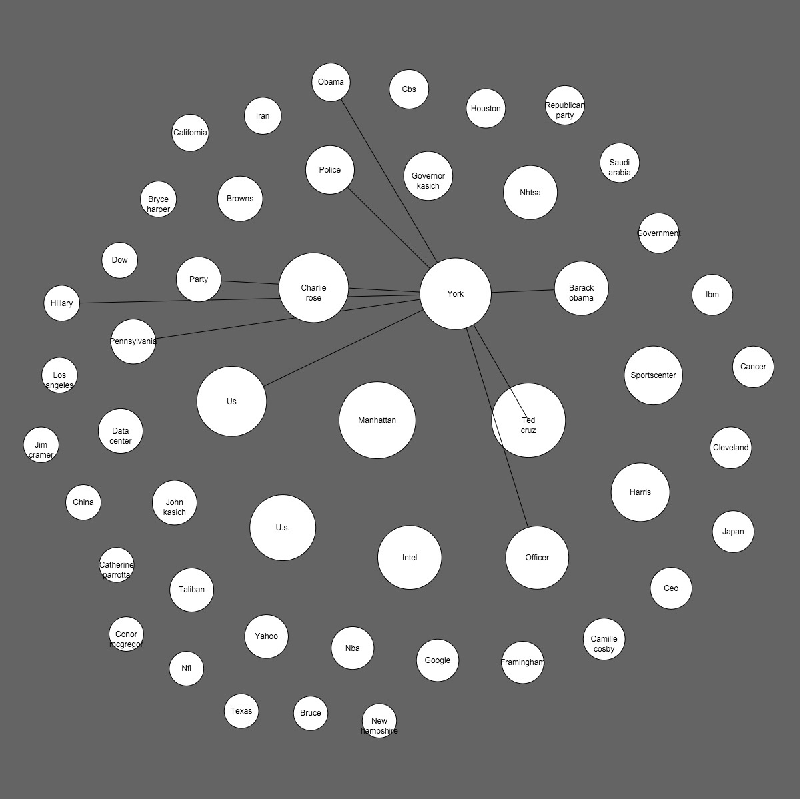

Final Project - Representations
Sketches

code
showing the top entities, text size mapped to number of mentions

cross referencing 2 data sources in order to find connections. The matrix doesn't make much sense
Using just super-glue data. a square is colored if 2 entities were mentioned in the same sentence in the closed captions


Plotting the network in another way
text size shows the number of mentions. color of the lines matched the number of mentions together.

Moving to circles. the location is determined using PCA on the adjacency matrix.


Trying the d3.js circles packing algorithm for circles locations

More Ideation:
For the final version. I want to show how the connections and sizes of entities change across time.
When hovering on a circle, the related circles will highlight. Then, clicking on any of the highlighted circles will show a relevant video bit that talks about these 2 entities